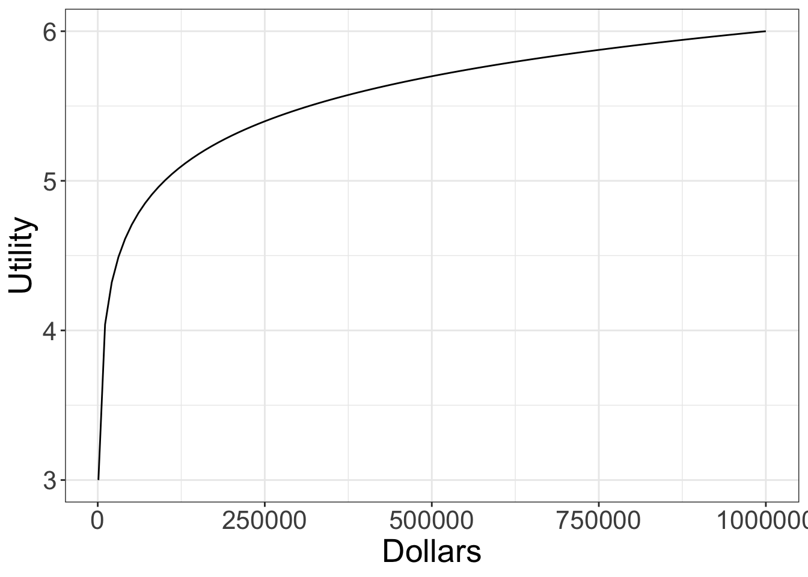

305 Lecture 9.5 - Dollars and Utility
Plan
- In this lecture we’ll talk about the relationship between money and utility.
Associated Reading
Section 12.5 of Odds and Ends.
Marginal Utility and Decision Making
- Getting $2x is not twice as valuable as getting $x.
- That’s because it’s like getting $x, then getting $x again.
- And after you get the first $x, you’re richer, and getting $x is (in general) less valuable to richer people.
Philosophical Point
It’s relatively uncontroversial that the following two things are true. The philosophical claim that lies behind the theory I’m setting out in these slides is that they are closely connected.
- You’re better off getting a million dollars than getting a 50/50 shot at two million dollars.
- Getting a million dollars changes your life more than it changes the life of a billionaire.
Both are grounded in the fact that the more money you have, the less utility each extra dollar has.
Utility and Money
The graph of the relationship between utility and money should have the following two features.
- More money means more utility.
- The amount of extra utility you get for each extra dollar should be decreasing
Let’s look at some familiar mathematical functions that satisfy that description.
Utility as Square Root
\begin{center}
\end{center}
Utility as Square Root
- This curves down, but not particularly quickly.
- It is a nice toy model of the relationship between utility and money, especially because square roots are easy enough to calculate, but it isn’t that realistic.
- Let’s try a different function.
- I’ll use a logarithmic function, but I’ll ignore values below $1,000 because the numbers get weird.
- This is obviously a big thing to ignore!
Utility as Log10
\begin{center}

\end{center}
Utility as Log10
- This is a bit more plausible.
- But what about all those dollars below $1,000?
- Big thing about way to understand these graphs.
- The x-axis measure net total wealth.
- It does not measure size of bank account.
- It includes things like the value of clothes in one’s wardrobe, food in one’s fridge/pantry, dishes/saucepans in one’s kitchen etc and, if one is particularly wealthy, any means of transportation one has (car, bike, etc.).
- Those can fall below $1,000 - but life is hard below that point.
Expected Value of Bets
- Don’t think about how much money the bettor stands to gain or lose.
- Instead, think about the possible end-states of the bet.
Example (using Log10 Function)
Imagine that our person currently has $100,000 in net wealth.
- They are offered a bet that has a 50% chance of winning $900,000, and a 50% chance of losing $90,000.
- What should they think about the bet?
Example (using Log10 Function)
They should be indifferent between taking and declining the bet.
- Right now, they have utility 5 (i.e., \(log(10^5) = 5\).)
- If they take the bet, they could end up with $10,000 or $1,000,000, with equal probability.
- That is, they could end up with utility 4 or 6.
- And each of those are equally likely.
- So the expected utility of taking the bet is 5 - just like the status quo.
Is this Realistic?
- I’m not sure!
- It seems rather risk averse to me, but the difference in quality of life between having $100,000 and having $10,000 is pretty substantial.
- In one of those you can have a decent car, a nice wardrobe and kitchen, and enough spare cash to make rent each month or handle a small crisis without problems.
- In the other you can maybe have 1 of those 3.
Change the Example
Imagine that our person currently has $100,000 in net wealth.
- They are offered a bet that has a 50% chance of winning $800,000, and a 50% chance of losing $90,000.
- What should they think about the bet?
- It’s worse than the previous one, so they shouldn’t take it.
- That’s even though it’s expected dollar return is very very positive.
Inverting the Example
Imagine that our person has $10,000, plus an asset of very uncertain value.
- It’s got a 50% chance of being worth nothing, and a 50% chance of being worth $890,000.
- Someone offers to buy it from them for $90,000, and they will have no other chance to sell it.
- What should they do?
Take the Deal
This is just the same as the previous example. They have two choices.
- A sure $100,000.
- A 50/50 chance of either $10,000 or $900,000.
And they should (given this utility function) take option 1.
Sporting Example
- A young pitcher with not many assets ($10,000 including his old car, his sports gear etc) is offered $90,000 to sign with a pro team.
- He is told, reliably by an agent, that if he plays college ball for a year, there’s a 50/50 chance that he’ll get a great deal next year, one worth $890,000.
- But there’s also a 50/50 chance that he’ll regress, get injured etc, and get nothing.
- What should he do?
- On this model, he should take the deal.
- And of course the team should offer him the deal, even if they think there is a 50% chance that he’s of no value to the team.
Insurance
Insurance is a funny business.
- Every insurance contract is a bet, with you and the insurance company on opposite sides of it.
- The bet can’t, as a matter of almost mathematical necessity, have a positive expected dollar return for both of you.
- And given it involves some transaction costs, it could have a negative expected dollar return for both of you.
- So why does the industry even exist?
Declining Marginal Utility
Well let’s work through an example.
- Assume our person has assets of $100,000, including a car worth $30,000.
- They live in a risky area, so there is a 1 in 10 chance the car will fall in value to 0 over the next 12 months.
- They are offered an insurance contract with the following terms.
- They pay $3,200.
- If the risky thing happens and the car value falls to 0, the insurance company will reimburse them, so they will get the $30,000 back.
Should They Take the Deal
Outcome if they take the deal
- A guaranteed $96,800.
Outcome if they don’t take the deal.
- A 90% chance of $100,000.
- A 10% chance of $70,000.
The latter outcome has an expected dollar return of $97,000 - that’s \(0.9 \times 100,000 + 0.1 \times 70,000\).
Should They Take the Deal
- But this doesn’t settle the matter. We care about utility not dollars.
- Let’s re-run the question using utility.
Should They Take the Deal
Outcome if they take the deal
- A guaranteed $96,800, which has utility roughly 4.986
Outcome if they don’t take the deal.
- A 90% chance of $100,000, which has utility 5.
- A 10% chance of $70,000, which has utility roughly 4.845
The latter outcome has an expected utility return of roughly \(0.9 \times 5 + 0.1 \times 4.845 \approx 4.984\). Option 1 is better - not by much, but better.
Company Point of View
- Assume (for now) that they have a constant marginal utility of money.
- So all that matters is that the policy has a positive dollar value.
- And the expected dollar return of the deal is +$200, so it’s good for the company as well.
Success!
- We found a case where both parties are rational in taking the bet, even though they are on opposite sides of it.
- And this doesn’t require fraud, or misperception of the odds for either party.
Possibility Constraints
- This is only possible because the two sides have different utility curves, at least locally.
- That’s what makes the conflicting interests (in dollar terms) into a possible mutual interest.
- Someone with a less steeply sloping utility curve (i.e., with more resources) is in a better position to absorb certain risks.
- It is worth paying over the odds to them to absorb that risk.
Curves (Almost) Always Slope Down
- But eventually, the insurance company has risks it shudders at as well.
- This only happens on enormous scale, but it happens.
- And it’s why insurance companies won’t (happily) offer insurance against correlated risks, like floods or invasion.
A Big Caveat
When you run the numbers on cases like this, three things come out.
- Sometimes, insurance is good for both parties.
- Unless the loss is a huge portion of the customer’s wealth, the numbers end up being really close.
- Even in those cases, the numbers aren’t that different.
So I end up thinking that people probably over-purchase insurance, even though this is a model on which insurance purchase can be rational.
For Next Time
- We will end the week with a famous puzzle about the relationship between utility and money.